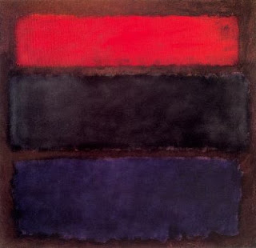

Bava Kamma 100 -Dyer Ruins the Wool
If one gives wool to the dyer, and it got burned in the cauldron, the dyer pays the value of the wool - because he is a paid custodian, responsible for accidents.
If he dyed it poorly, the dyer gets the lesser of the improvement to the wool and his expenses. Since he knew that using inferior dye would result in inferior product, he is a damager. His claim to compensation is that he did in fact increase the value.
If he was to dye red, and he dyed black, Rabbi Meir says that he pays the value of wool, but Rabbi Yehudah awards the claim as above.